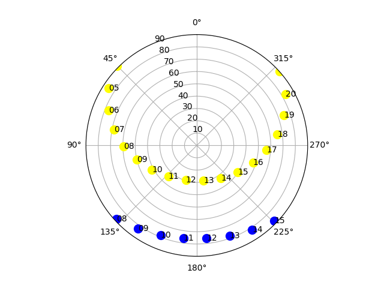

Introduction
Importation de module et poste d'observateur
Objets et leur localisation
Lecture de coordonnées
Coordonnées en degrés
Villes et à tout moment
Mouvement de la journée solaire - le début du programme
Mouvement du soleil du jour - solstice d'été
Mouvement du soleil du jour - solstice d'hiver
Mouvement du Soleil à la lumière du jour - dessin
PyEphem est disponible sous le nom ephem qui doit être modifié lors de l’importation en ep pour raccourcir la programmation.
from pylab import *
import ephem as ep
obs = ep.Observer()
obs.lon = "18.56406"
obs.lat = "53.09546"
obs.elevation = 133.61
Les fonctions et structures du module ephem sont appelées dans la fonction ep.method(). Tout d'abord, nous définissons la position de l'observateur (instrument d'observation). Pour ce faire, nous créons la structure appropriée (structure = ep.Observer ()) et remplissons ses champs (structure.pole = valeur).
fonction = ep.nomObjet().
# Objet
lune = ep.Moon()
Après avoir créé l'objet, nous pouvons calculer son emplacement actuel en fournissant des informations sur l'observateur, situées dans la structure obs précédemment créée.
lune.compute(obs)
Comme vous pouvez le constater, vous pouvez définir plusieurs observateurs différents et compter les coordonnées de l'objet sélectionné pour différents endroits de la Terre. Cela peut être utile lors de la planification de campagnes d’observation menées par différents observatoires.
Les coordonnées calculées sont lues à partir des champs de structure d'objet.
# coordonnées calculées
print("Position actuelle de la Lune")
print(" ------------------------------ ")
# nous affichons l'ascension droite et la déclinaison
print("RA : ", lune.ra)
print("Dec : ", lune.dec)
# nous affichons l'azimut et l'élévation
print("--------------------------------")
print("Az : ", lune.az)
print ("El : " , lune.alt)
Les valeurs calculées sont données au format heures: minutes: secondes ou degrés: minutes: secondes d'arc pour l'heure actuelle UT sur époque 2000.
Position actuelle de la Lune
------------------------------
RA : 6:18:27.81
Dec : 20:49:04.9
--------------------------------
Az : 197:06:32.3
El : 56:50:39.8
Si vous souhaitez utiliser des coordonnées calculées sur un graphique, il est utile de les convertir en degrés à l'aide de la fonction degrés.
# coordonnées azimutales en degrés sous forme d'un nombre réel
print(" -------------------------------- ")
print("Az (deg): ", degrees(lune.az))
print("El (deg): ", degrees(lune.alt))
Azimut et élévation en degrés:
--------------------------------
Az (deg): 207.85208210454263
El (deg): 55.334644372169485
PyEphem.
# OBSERVATEUR
obs = ep.city("Paris")
print("longitude : ", obs.lon)
print ("latitude : ", obs.lat)
Nous pouvons attribuer n'importe quelle date et heure à chaque observateur:
# PROPRE DATE ET HEURE TU
obs.date = "2019/01/13 10:00:00"
Il faut seulement se rappeler que les chiffres de la date sont séparés par le signe / et l'heure par deux points.
# IMPORTATION
from pylab import *
import ephem as ep
# OBSERVATEUR
obs = ep.city("Warsaw")
# OBJET
soleil = ep.Sun()
# TEMPS
tm = linspace(0 , 24 , 25)
# POLOGNE PAYS POLONAIS
pt = subplot(111 , polar= True )
# FEUILLE PRINCIPALE
for t in tm :
# changement de temps
obs.date = "2014/06/21 %02 d :00:00 "%t
# on calcule les coordonnées
sun.compute(obs)
# coordonnées azimutales - azimut en radians
az = float(repr(sun.az))
el = degrees(float(repr(sun.alt)))
# graphique - on change l'élévation par une distance zénithale
pt.plot([az], [90 - el], ls =" ", marker= " o ", c =" yellow ", \
markersize =10)
# heure locale UTC +2 heures en été
if el > 0:
pt.text (az, 90 - el, " %02 d "%(t+2), fontsize =10, \
ha = 'left' , va = 'center')
# TRANSFERT HIVERNAL - nous répétons les calculs "en décembre"
obs.date = "2014/12/22 %02d:00:00" % t
soleil.compute(obs)
az = float(repr(soleil.az))
el = degrees(float(repr(soleil.alt)))
pt.plot([az], [90 - el], ls ="", marker= "o", c ="blue", \
markersize =10)
# heure locale UTC +1 heures en hiver
if el > 0:
pt.text (az, 90 - el, "%02d"%(t+1), fontsize =10, \
ha = 'left' , va = 'center')
#nous limitons la distance zénithale à 90 degrés - horizon
plt.set_rmax(90.0)
# nous plaçons le nord en haut du graphique
plt.set_theta_zero_location("N")
plt.savefig("figs/mvtSoleil.pdf"); plt.savefig ("figs/mvtSoleil.png")
plt.show ()

obs = ep.city("Cairo")